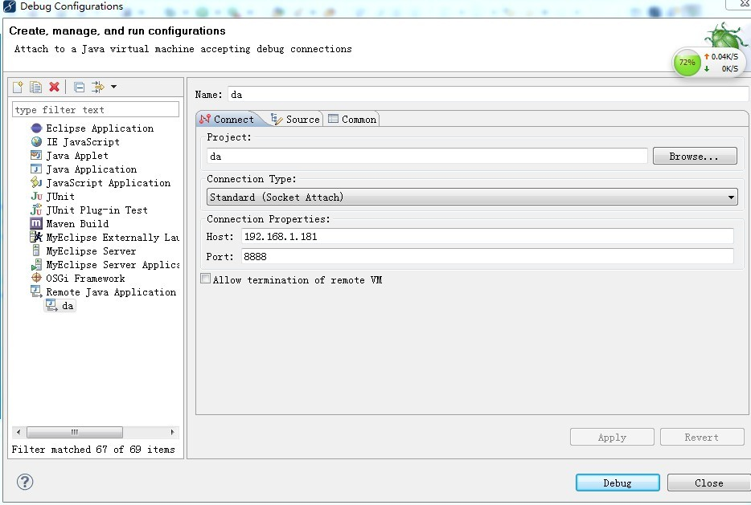

远程调试的必要
在无法访问运行中的实例时，调试一个JAVA程序可能相当麻烦；当应用程序在远程环境下运行，
并且不会在控制台或日志文件中输出任何结果时，调试工作变得更加困难。
如果你需要对一个运行中的JAVA应用程序进行全方位调试，Sun的Java平台调试构架（JPDA）可为您提供帮助
JPDA介绍
JPDA并非一个应用程序或调试工具，而是一组精心设计的接口与协议。
Sun设计这一标准的目的是提供一个基础构架，以便第三方工具和调整器能够高效利用它。还有许多利用JPDA的优秀调试器和IDE，
包括一些获得广泛认可的工具，如Borland JBuilder、Oracle JDeveloper、IntelliJ IDEA、Sun NetBeans、IBM Eclipse等。
JPDA原理
JPDA由三个接口构成，这些接口为桌面系统的开发环境而设计。
1.JAVA虚拟机工具接口（JVMTI）定义虚拟机（VM）在调试时必须提供的服务。（在JAVA 5.0中，JVMTI替代已被删除的JAVA虚拟机调试接口）。
2.JAVA调试线协议（JDWP）定义在调试过程和调试器前端之间传输的信息和请求的格式。它执行JAVA调试接口（JDI）。
3.JDI定义用户代码级信息和请求。
具体细节请参考:http://www.ibm.com/developerworks/cn/opensource/os-eclipse-javadebug/
1.打开tomcat安装目录下的bin/catalina.sh，加入CATALINA_OPTS变量（linux环境）
CATALINA_OPTS='-server -Xdebug -Xnoagent -Djava.compiler=NONE -Xrunjdwp:transport=dt_socket,server=y,suspend=n,address=8888'
如截止其中一段:(这里以tomcat7-linux为例)
# OS specific support. $var _must_ be set to either true or false.
CATALINA_OPTS='-server -Xdebug -Xnoagent -Djava.compiler=NONE -Xrunjdwp:transport=dt_socket,server=y,suspend=n,address=8888'
cygwin=false
darwin=false
os400=false
tomcat6-windows,则直接修改startup.bat
将call "%EXECUTABLE%" start %CMD_LINE_ARGS% 修改为:将call "%EXECUTABLE%" jpda start %CMD_LINE_ARGS% (中间加jpda，默认端口8000)
远程调试时注意事项:
a).本机的代码与服务器需要一致，否则不一致的地方，则调试不了.
b).若打的war包，是用ant构建的,debug属性需要设置为true，否则也调试不了（jpda connection会关闭），要如下配置才可以
...
2.在eclipse或myeclipse中进行配置,选择项目，点击Debug as>Debug Configurations...，然后进入如下截图配置
